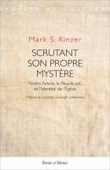

Livres de Rabbi Mark S. Kinzer dirigeant Juif Messianique Mark S. Kinzer est rabbin de la Congrégation Zera Avraham, à Ann Harbor dans le Michigan (U.S.), et Président émérite du Messianic Jewish Theological Institute.

https://www.amazon.fr/Scrutant-son-propre-myst%C3%A8re- lidentit%C3%A9/dp/2889188108
Peu de chrétiens connaissent le Judaïsme Messianique. Le présent ouvrage leur fera découvrir que les juifs de cette mouvance non seulement croient au Christ en tant que Messie et Fils de Dieu, mais partagent l’essentiel de la foi chrétienne, tout en lui ouvrant des horizons théologiques et spirituels insoupçonnés.
Selon le Cardinal Schönborn, qui préface ce livre, les réflexions théologiques novatrices de Marc Kinzer témoignent de sa maîtrise de la théologie catholique et de sa connaissance intime de la « mystérieuse réalité commune qui mène le judaïsme et le christianisme à une unité spirituelle plus profonde que la diversité de leurs institutions religieuses. »
Kinzer écrit: « La relation d’inhabitation mutuelle qu’a Jésus avec les deux communautés [juive et chrétienne] crée le "lien spirituel" qui unit l’une à l’autre. […] Dans cette ecclésiologie […] les disciples juifs de Jésus ont un rôle unique. Si nous assumons notre judéité comme une vocation spirituelle, si nous nous identifions avec le peuple juif autant qu’avec l’ecclesia [chrétienne], alors nous devenons un signe sacramentel du lien spirituel qui unit l’ecclesia à l’Israël–généologique [juifs de naissance]. »
Préface du CARDINAL CHRISTOPH SCHÖNBORN Traduit par Menahem R. Macina Date de parution 11 Mai 2016
Avis de lecteur Un livre qui devrait faire date dans le dialogue judéo-chrétien Mark Kinzer n'est pas n'importe qui. Le livre traduit par Menahem Macina, lui même spécialiste du dialogue judéo-chrétien, offre au lecteur un ouvrage hors du commun. Jamais aucun livre sur le sujet n'a atteint l'objectif de Kinzer. Le Rav Kinzer, rabbin et chrétien, offre une analyse des Ecritures sortant des sentiers habituels. Et si le peuple juif n'avait jamais été rejeté? Et si le but de Dieu était de réunir les deux peuples pour n'en faire qu'un sans que l'un et l'autre ne rejette ses traditions. C'est certes une lecture juive des écrits du Nouveau Testament tout en gardant une lecture chrétienne de ce dernier. C'est unique en son genre. On comprend aisément pourquoi Menahem Macina, lui-même défenseur d'une telle lecture, ait prit la peine de traduire un tel ouvrage. Aucun lecteur attentif ne peut passer à côté d'un tel ouvrage. Nul ne peut sortir intact d'une telle lecture. Merci à Menahem Macina ainsi qu'aux éditions Parole et Silence pour la publication d'un livre qui, j'espère, fera date dans l'union des deux peuples.
Le Messie d'Israël et le Peuple de Dieu Vision d’une fidélité Juive Messianique à l’Alliance https://www.amazon.fr/messie-dIsra%C3%ABl-peuple-dieu- messianique/dp/2889183661 Kinzer n’accepte pas l’idée que le judaïsme et le christianisme soient deux phénomènes complètement séparés, et soutient de manière convaincante que ce n’est pas ce que l’on constate dans le Nouveau Testament. Au contraire, les deux sont intimement et inextricablement liés l’un à l’autre et aux desseins rédempteurs de Dieu pour toute la création. La méthode transversale de Kinzer correspond à une double tâche: celle d’expliquer l’élément juif aux chrétiens et celle d’expliquer l’élément chrétien aux juifs. Dans la mise en œuvre de cette double représentation, le judaïsme messianique apparaît comme le lien essentiel, et la théologie de Kinzer adresse aux croyants juifs en Yeshoua un appel à assumer le rôle de bâtisseurs de ponts, qui leur a été existentiellement assigné. Le lien que Kinzer établit entre Israël, Yeshoua, et la communauté des croyants en Yeshoua (ou ekklesia) crée une interprétation riche et nuancée de l’histoire du Salut qui ouvre de nouvelles perspectives pour la compréhension de l’œuvre rédemptrice de Dieu dans le monde. Traduction par Menahem Macina
Date de parution 15 Novembre 2018 Nombre de pages 266 pages
Pour connaître Rabbi Mark S. Kinzer, sa pensée et son action, voir la page Web qui lui est consacrée (en anglais): https://www.markkinzer.com/
Consulter également les articles qui figurent dans la section de mon compte Internet sur Academia.edu, intitulée « Judaïsme Messianique ».
Texte mis en ligne, par Menahem Macina, sur le site Web Academia.edu, le 8 septembre 2020.